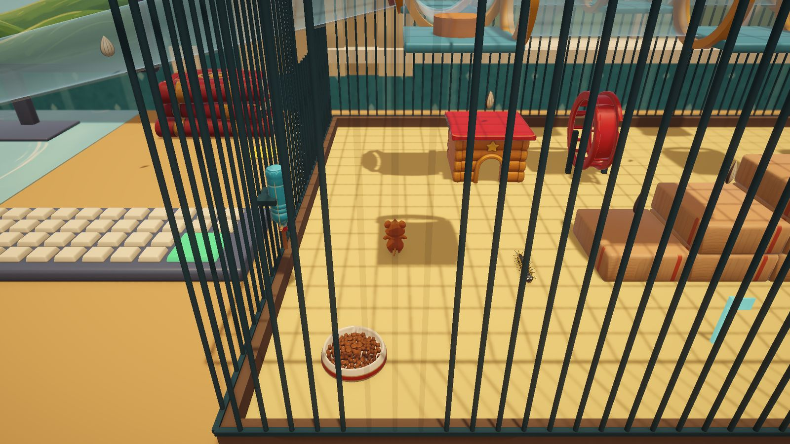
Mundo 1
La Jaula
Barrotes, un comedero y una rueda que no lleva a ninguna parte. Encuentra la forma de salir de tu prisión y cruza un escritorio lleno de cables, charcos y chispas.
Suena: Engranajes
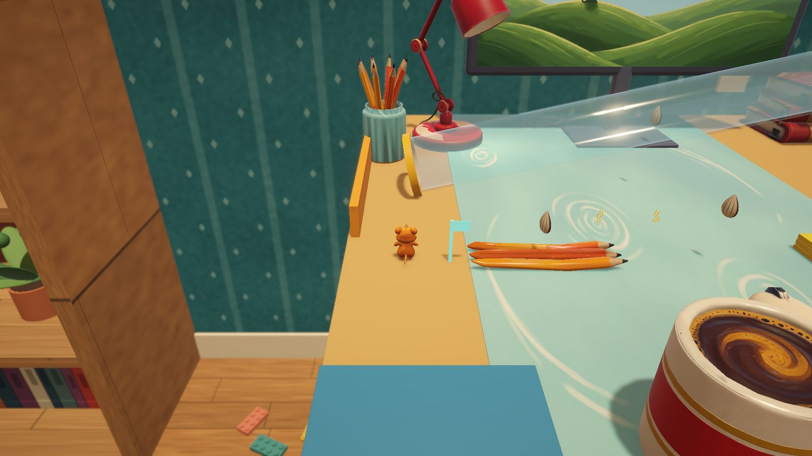
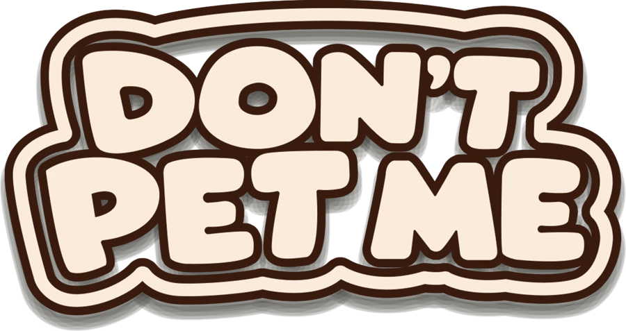
Un hámster pequeño.
Una gran aventura.
La historia
En lo más profundo del bosque vivía Mochi, un pequeño hámster con un apetito enorme.
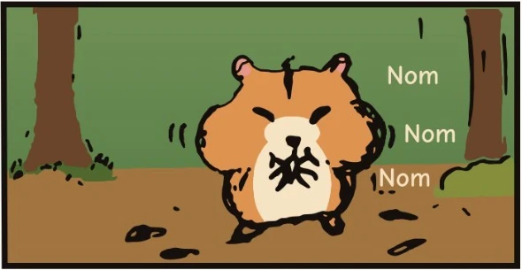
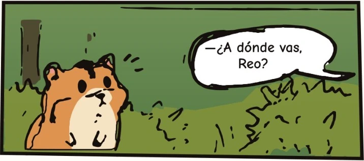
Hasta que un día… alguien vino por él.
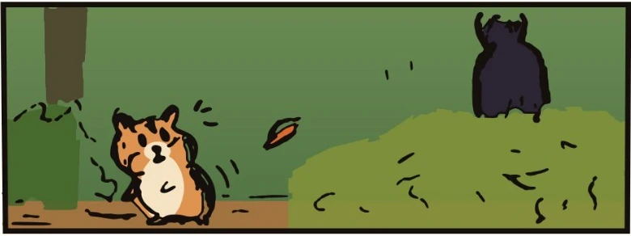
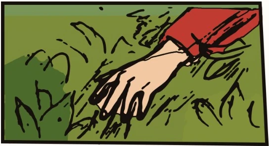
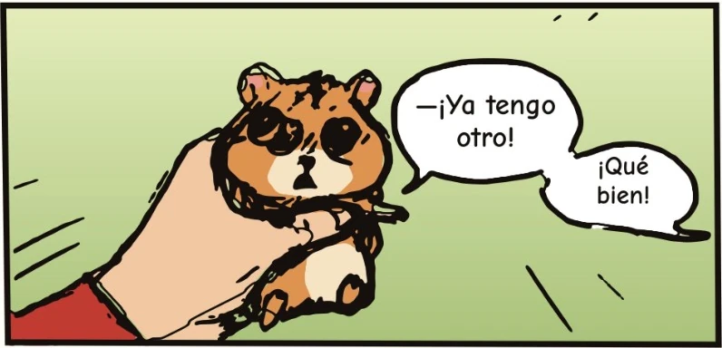
Lo alejaron de su familia… y lo llevaron muy lejos de casa.
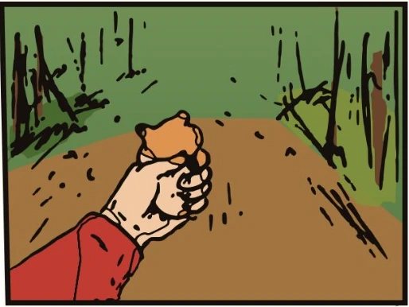
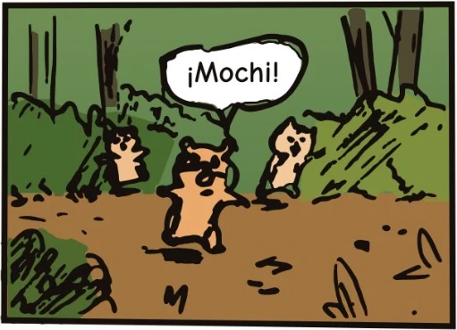
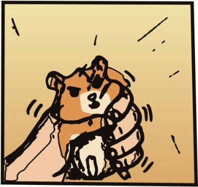
Despertó en una jaula. Pero hay algo que deberían saber de Mochi…
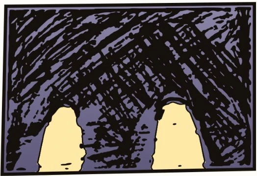
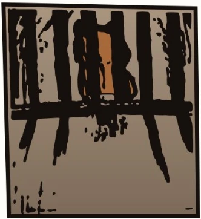
…no se deja acariciar.
Intenta acariciarlo…
El protagonista
Pequeño, gruñón y con mucho más valor que tamaño. Mochi solo quiere una cosa: volver a casa con su familia… y que nadie lo acaricie en el camino.
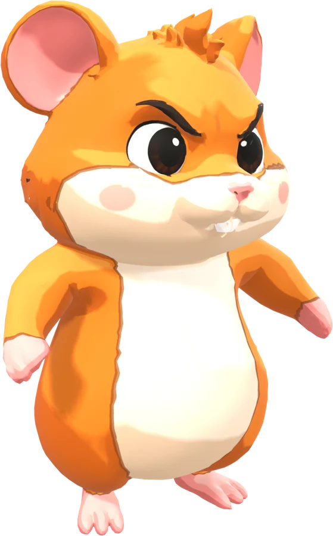
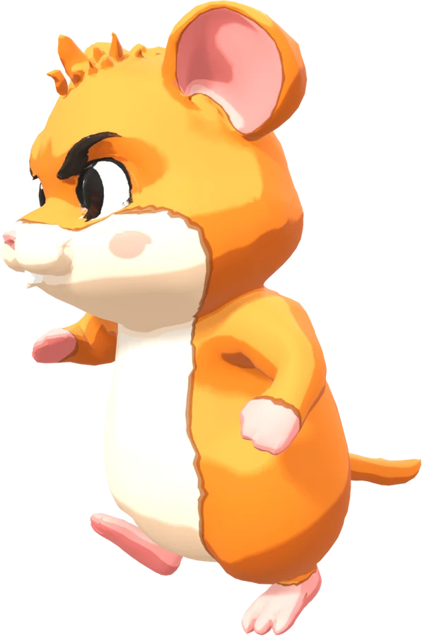
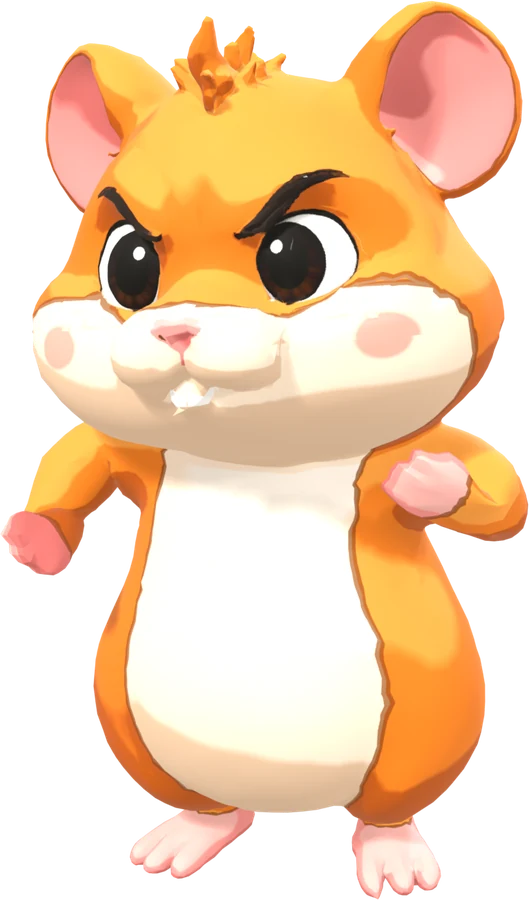
El mundo
A la altura de un hámster, una taza es una torre, una regla es un puente y una hormiga es un monstruo. Cada rincón de la casa es un nuevo reto.

Mundo 1
Barrotes, un comedero y una rueda que no lleva a ninguna parte. Encuentra la forma de salir de tu prisión y cruza un escritorio lleno de cables, charcos y chispas.
Suena: Engranajes

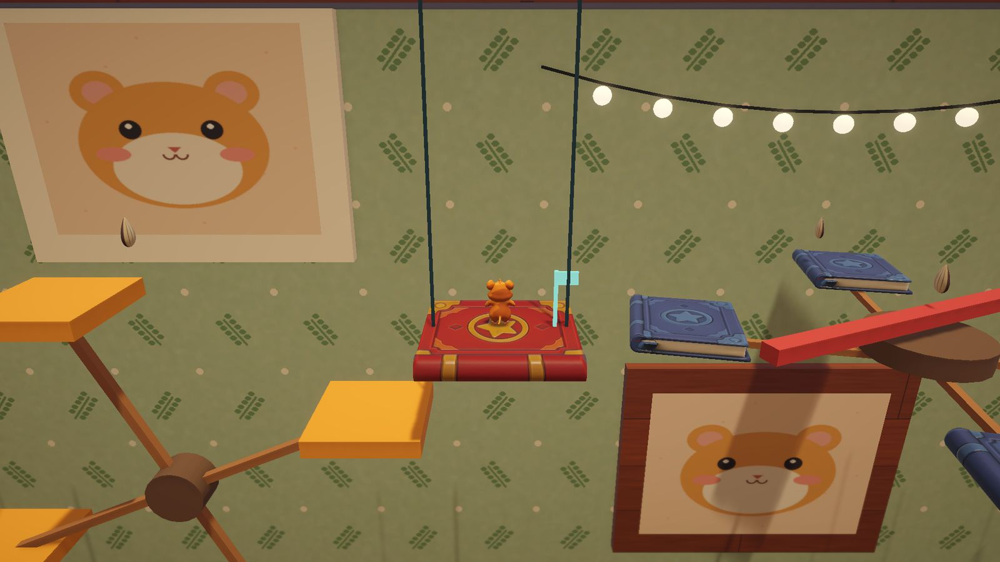
Mundo 2
Escala montañas de libros, cruza reglas como puentes, sobrevive al hormiguero, vuela con el ventilador y supera un juego de memoria donde las paredes te aplastan si fallas.
Suena: Aventura
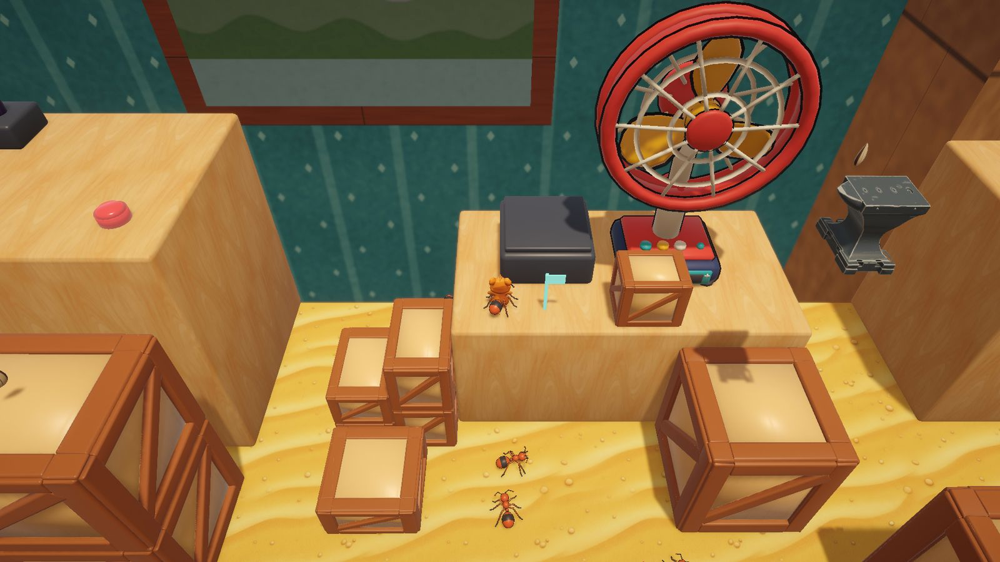
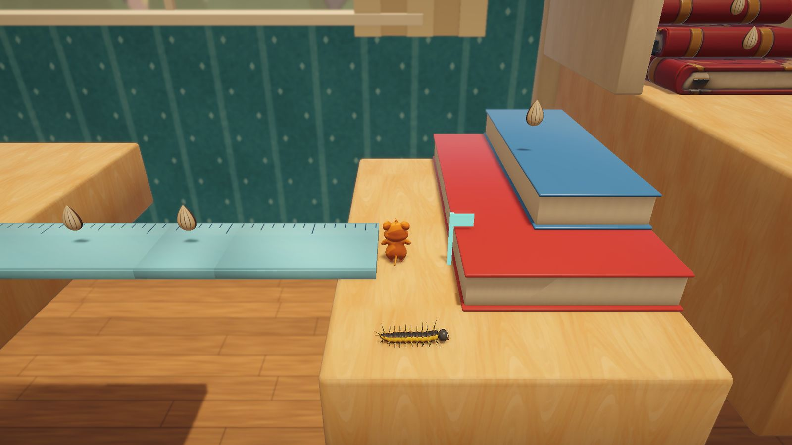
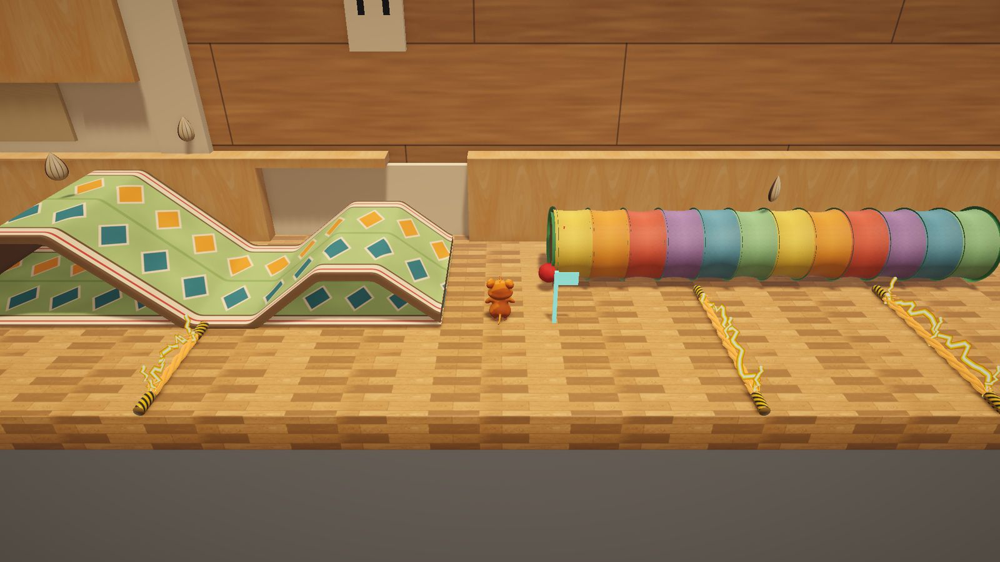
Mundo 3
El camino a la libertad está lleno de ratoneras, escobas que caen, cables pelados… y una aspiradora robot que no deja de perseguirte. Usa túneles y tirolesas para escapar.
Suena: Run
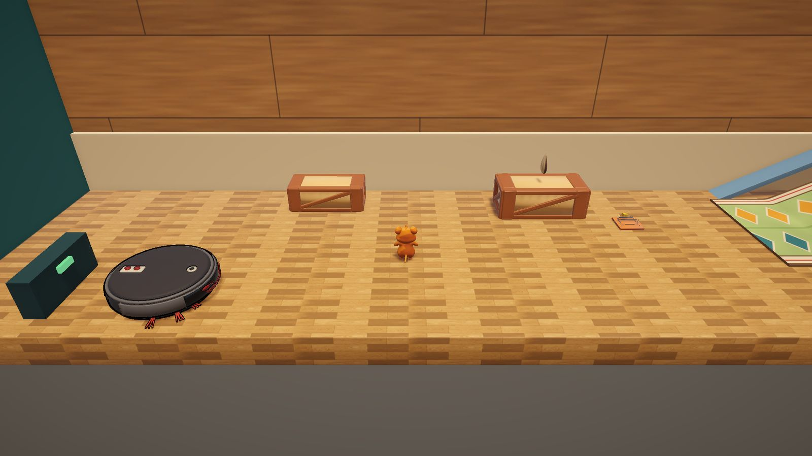
Así se juega
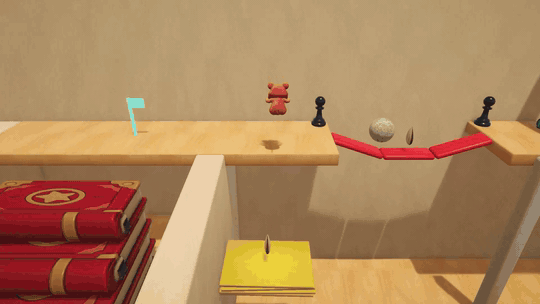
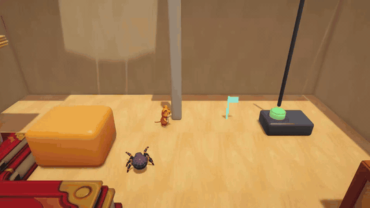
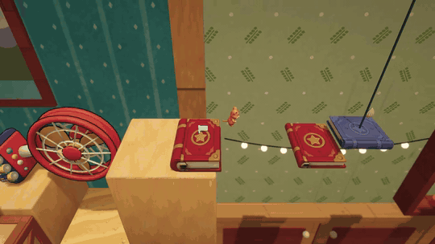
No todo es lo que parece. Hay banderas de control falsas, semillas que son trampa, bloques invisibles que te cortan el salto, plataformas que huyen cuando te acercas y yunques que te dejan plano como tortilla.
Vas a reír. Vas a gritar. Y vas a querer intentarlo una vez más.
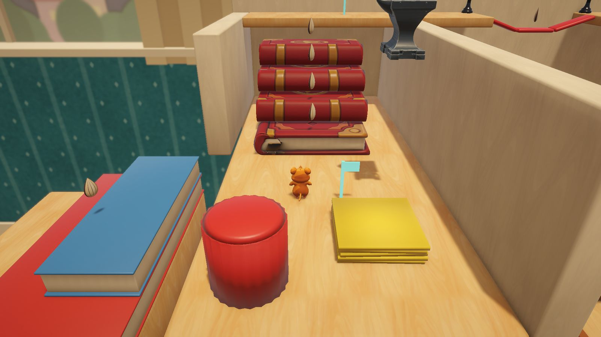
Cuidado
Para ti son bichos pequeños. Para Mochi, son monstruos. Haz clic en cada uno para conocerlo.
Banda sonora
Cada mundo tiene su propia canción, compuesta para la aventura de Mochi. Dale play y escúchalas.
El tema principal. Tierno y cálido, como el hogar de Mochi.
Mundo 1 · La Jaula. Mecanismos, ingenio y un plan de escape.
Mundo 2 · El Cuarto. Para explorar cada estante y cada rincón.
Mundo 3 · El Pasillo. ¡Corre, Mochi, que viene la aspiradora!
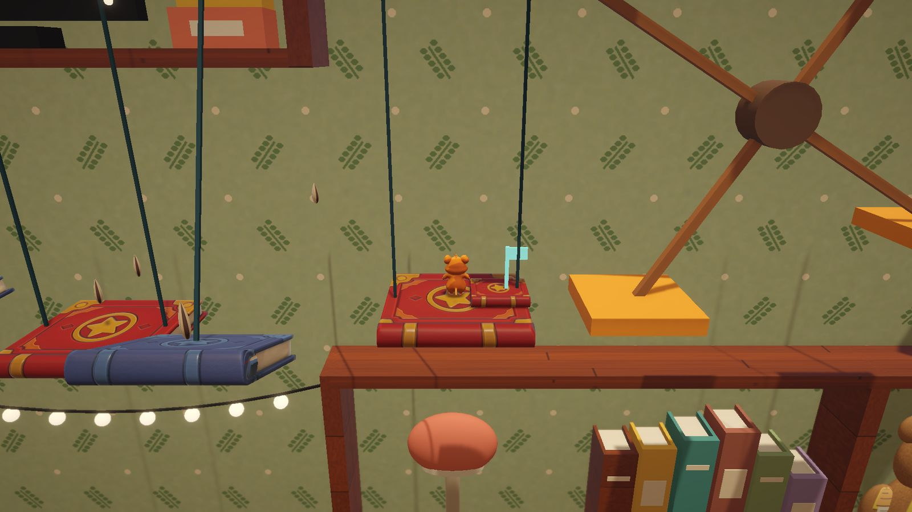
Un hámster pequeño.
Una gran aventura.
Disponible para Windows y macOS